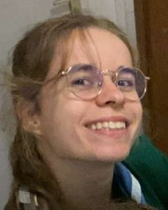
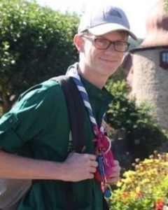
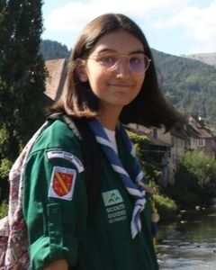
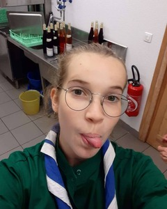
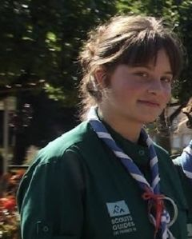
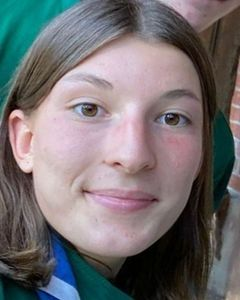
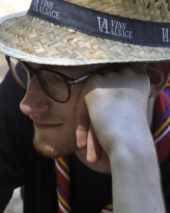

Les compagnons sont les jeunes de 17 à 21 ans des scouts et guides de France. Une équipe Compagnons est constituée généralement de 3 à 7 jeunes présent sur un groupe ou parfois plusieurs groupes. La branche Compagnons est la dernière étape du parcours des jeunes chez les Scouts et Guides de France. Elle suit directement la branche pionniers et caravelles. Introduite en 2004, la branche Compagnons remplace les branches compagnons des Scouts de France et JEM des Guides de France.
Qui somme nous?
Nous somme une équipe de 7 compagnons de Thann. Nous entrons maintenant dans notre 2 années. Lors de notre première année nous somme partie dans le sud de la France pour apporter notre aide dans une maison autonome. Mais nous avons également réaliser des missions plus locales, nous avons aider la banque alimentaire pour réaliser une collecte de don, nous avons également organiser une collecte de don pour l’Ukraine.
Projet
Pour l’instant notre grand projet de deuxième année n’est pas encor certain mais nous somme en relation avec une association de protection de l’environnement agissant en Islande. Ce projet nous tient vraiment à cœur que ce soit pour l’action ou pour le cadre. Nous comptons compenser notre émission carbone en plantant le nombre nécessaire d’arbre sur place (environ 4 par personne en fonction des trajets sur place).
Financement
Pour pouvoir réaliser notre projet principal nous avons besoin de financement. Pour cela nous somme en recherche permanente de petits travaux tel que faire le services à des mariage, du babysitting, refaire de la peinture de volet, faire de la manutention de stock dans des foire, etc.
Membre de l’équipe :
Jeanne
Jeanne, déléguée d'équipe. Pour ceux qui ne la connaissent pas, c'est l'influenceuse préférée des thannois ! Elle manie les réseaux sociaux comme personne, et est toujours au courant de tout. C'est donc elle qui gère la communication et ce compte insta de qualité. Reine autoproclamée du second degré, ne lui en faites pas elle ne le comprendra pas...
Antoine
Antoine, Très occupé par ses vignes, vous risquez de plus le voir sur ce compte que dans la vie réelle. En charge de nous trouver de super lieux d'hébergement, il ne se foule pas trop les chevilles en nous proposant .... ses champs !! Si vous voyez la localisation "au plateau", vous pouvez donc en déduire qu'Antoine n'a pas fait son boulot.
Fiorella
Fiorella, On ne comprenait pas pourquoi elle n'avait pas pris option maths mais tout s'explique à présent... Responsable trésorerie ce ne sont pas les nombres complexes qui l'intéressaient, mais plutôt ceux de son compte en banque ! D’origine italienne, elle accorde une partie importante du budget à la bouffe, c’est donc de sa faute si nous prenons 3 kilos à chaque camp !
Emma
Emma, en charge de notre santé ! Complètement cassée du dos, malgré ses 3 ans de kiné, on a quand même confiance en elle pour nous soigner. Première de l’équipe dans la catégorie massage, elle saura vous relaxer après une longue randonnée. Plus confortable que les lits de l’infirmerie, elle est très expérimentée en soin pour ongles incarnés…
Melanie
Mélanie, Rendue célèbre grâce à sa phrase "c'est fade" devenue culte elle gère l'intendance ! Elle manie parfaitement sel, poivre et moutarde ce qui lui permet d'être indétrônable sur ce poste. Entre son "soleil cancéreux" et ses plats (très) assaisonnés, on ne sait plus quoi vous conseiller. Avec toujours de nouvelles recettes à son actif, elle ne saura que vous épater.
Zoé
Zoé, Malgré ses 3 années de scoutisme, elle a marqué les esprits, et n'a pas fini de vous épater. En charge de l'animation, on espère qu'elle nous proposera autre chose que ses domaines de prédilections : la course dans les orties, et le saute trou à eaux grasses ... Lycéenne à ses heures perdues, elle fait plus de sport par semaine que vous par an !
Timothée
Timothée, aka le chic type de l'équipe. Nulle part et partout à la fois, c'est notre couteau suisse préféré. Responsable matos, il passe plus de temps à nous présenter son fairphone qu'à remplir les malles... Sponsor officiel des boîtes de cachous, il se nourrit uniquement de ses petits bonbons, qu’on espère ne pas retrouver cachés entre deux batteries solaires ou mouchoirs de sang…